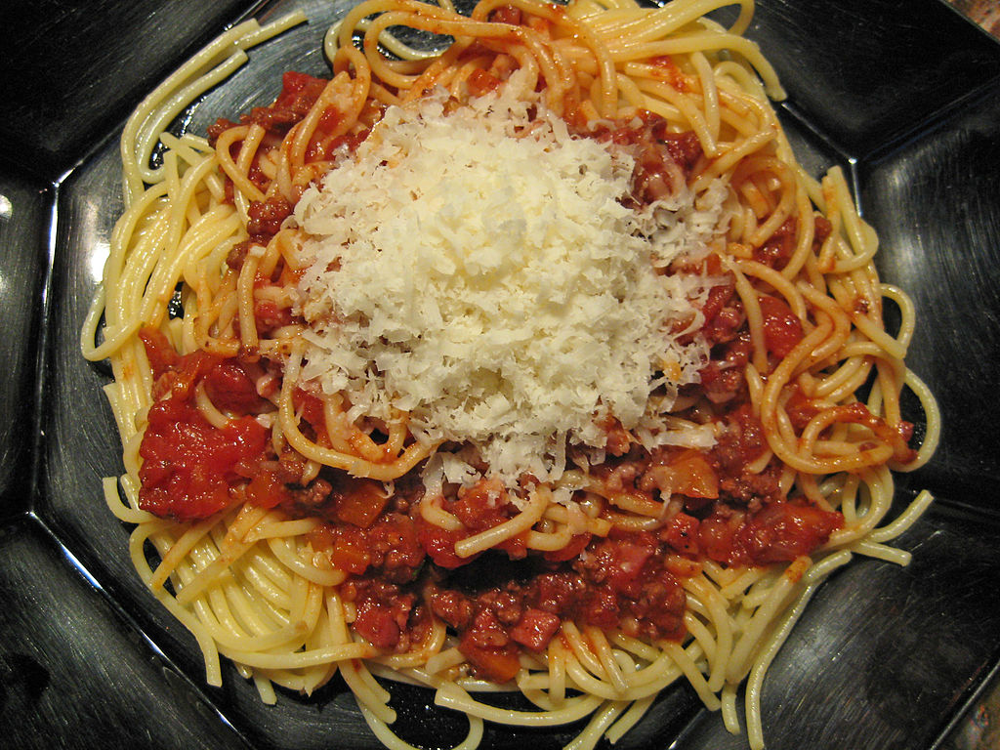

Home
Spaghetti Bolognese

Description
My mother's interpretation of an Italian classic, surely taken from a cookbook through the years, although I'm not sure when or where.
Quick and easy, although a longer cooking time allows the flavours to really develop.
Ingredients
- Spaghetti
- Minced Beef/Pork
- Onion
- Diced Tomatoes
- Carrots (diced, optional)
- Tomato purée
- Dried Basil
- Parmesan Cheese
- Red Wine
- Beef stock
Steps
- Finely Dice the onion
- Add onion to a saucepan with olive oil
- When beginning to brown, add minced beef/pork
- When meat is beginning to brown, add the tomatoes and tomato purée
- Add the beef stock and red wine
- Add the carrots and dried basil and bring to a boil
- In another saucepan cook the spaghetti following the instructions on the packet
- Serve the Bolognese on a nest of spaghetti with parmesan added to taste.